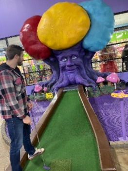
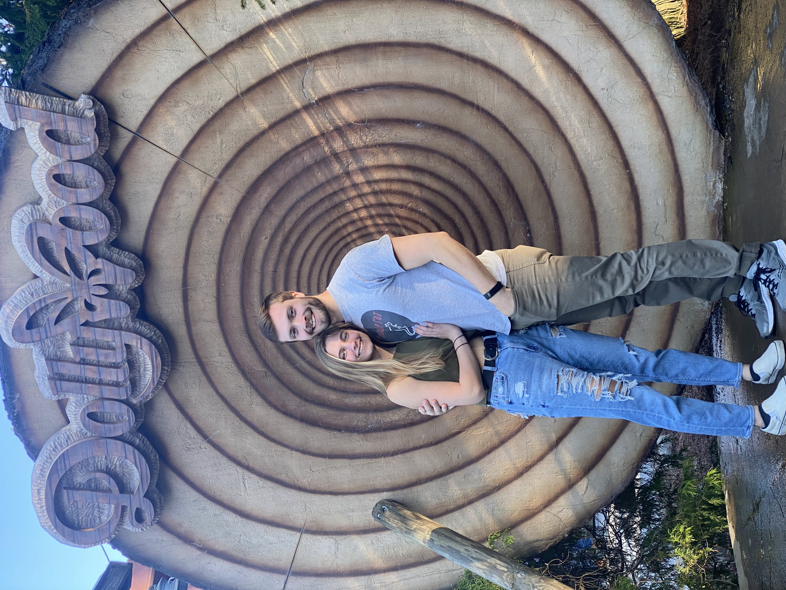
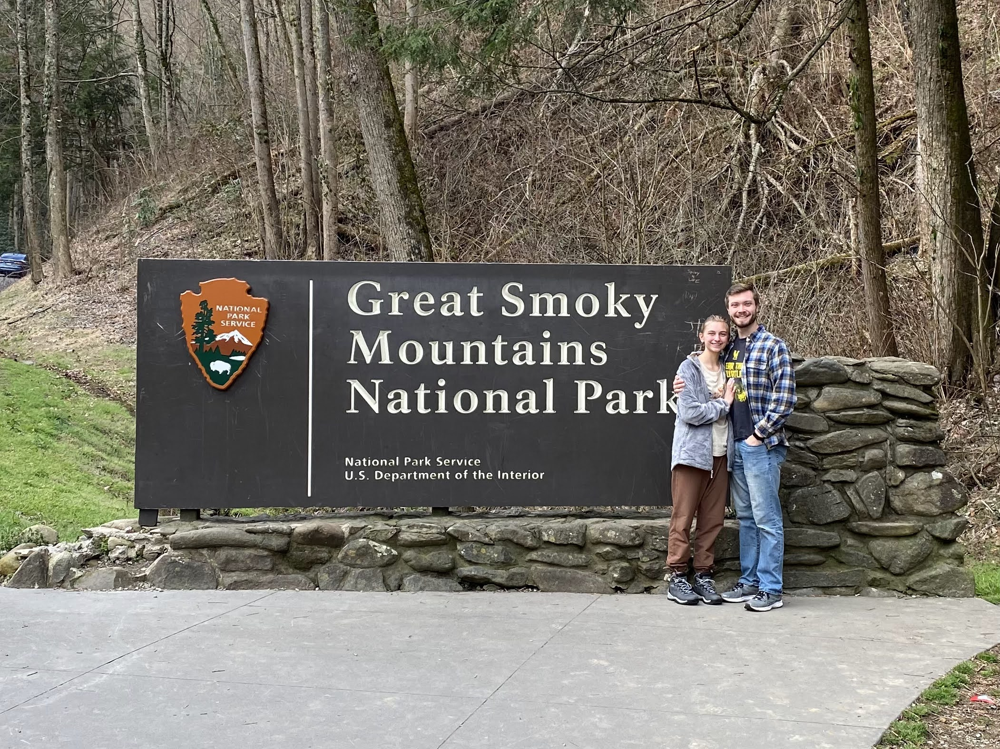
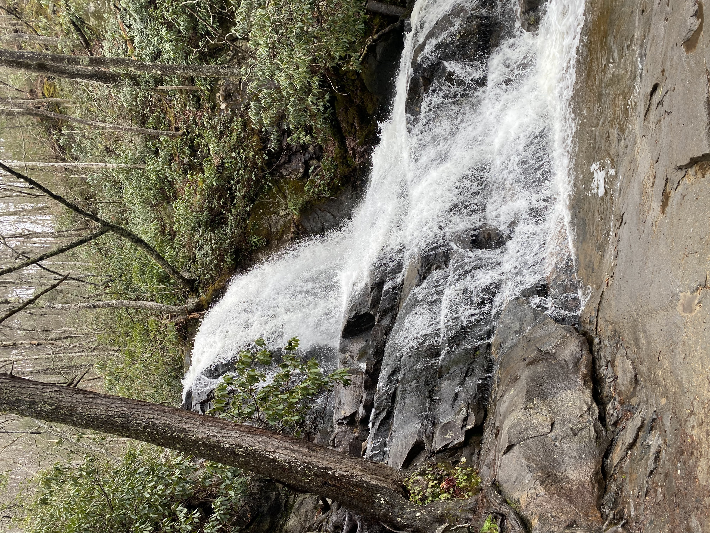

Day 1
We left from my house at 7am. It was an 8-hour drive to Gatlinburg. I drove the entire way and it went by pretty quickly. We got settled in our Airbnb, which was a room in an older couple’s house. They had a very cute dog. We ate at Buddys BBQ, which wasn’t really that great but we were hungry. Then, we played mini golf. The props were cool, but the course itself was pretty lame. Then, we went to bed!

Day 2
Today we went to Dollywood. We woke up early and made it to the park just as it opened. It was extremely packed. It was spring break and also the 2nd day the park had opened for the season. We rode about 4 of the 8 rollercoasters. One of them went through a mountain which was cool. We stood in line for 1 hour for the famous cinnamon bread. It was really yummy. Dollywood was a good experience, but it wasn’t my favorite park. It was way too expensive and packed with people. We ate dinner.

Day 3
Today we ate breakfast at Sawyers farmhouse breakfast. They had a breakfast where you could get a sample of everything you could ever want for breakfast. I got that and then Tyler got strawberry crepes. We split and it was amazing. Then, we headed to the national park. Today we were doing a 4-mile hike called Chimney tops. It was a nice hike. At the top, the “chimney top” part was gated off because there had been a fire a few years back. They didn’t want you to go that way because of fallen trees. We decided to go anyway. We didn’t climb to the top of the chimney top, but we got a lot closer. None of the trees had their leaves yet but it was still really pretty! We ate dinner at a Mexican restaurant, and I had a massive burrito covered in cheese.

Day 4
Today we went back to the Great Smoky Mountain National Park for a waterfall hike called Laurel falls. It was a short 3-mile hike, and it was pretty easy. The waterfall was beautiful. After that, we went to a place called Anakeesta. It was a private town on top of the mountain where you could walk around a little village and do various activities. It was awesome! We ate at Indian this night. It was my first time eating Indian. I had butter chicken and it was really amazing. Then, we went back to the Airbnb for bed. The next morning, we woke up at 8am to drive back home.

Total Spending
This is what we did and approximately how much we spent!
| Day One | Day Two | Day Three | Day Four | ||||
|---|---|---|---|---|---|---|---|
| Gas | $60 | Gas/td> | $30 | National Park Pass | $30 | Anakeesta | $60 |
| Buddys BBQ | $35 | Game | $4 | Game | $400 | Gamfdfdfdfdfdfe | $4 |
| Mini Golf | $40 | Game | $4 | Game | $400 | Game | $4 |
| Groceries | $15 | Game | $4 | Game | $400 | Game | $4 |
| Airplane Tickets | $4 | Game | $4 | Game | $400 | Game | $4 |